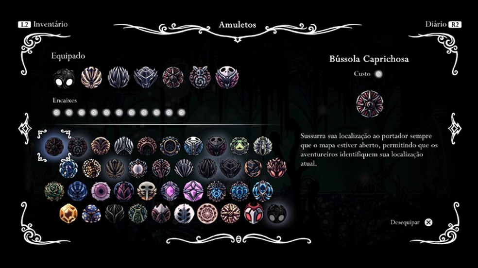

Amuletos

Durante a aventura, o jogador encontra diversos amuletos que garantem poderes especiais ao cavaleiro, porém só há a possibilidade de equipar alguns deles de cada vez. Para equipá-los, basta sentar em um banco e acessar o menu para preencher os espaços disponíveis, espaços esses que também podem ser aumentados durante o game. Alguns amuletos, como a Bússola, costumam ser essenciais para explorar – mas, como último recurso em uma batalha difícil, o jogador pode tirá-la e colocar um amuleto de combate.

Encaixes
Encaixes são necessários para se equipar Amuletos. Amuletos diferentes exigem uma quantidade diferente de encaixes livres. O jogador começa com 3 encaixes. 8 encaixes a mais podem ser encontrados durante o jogo.